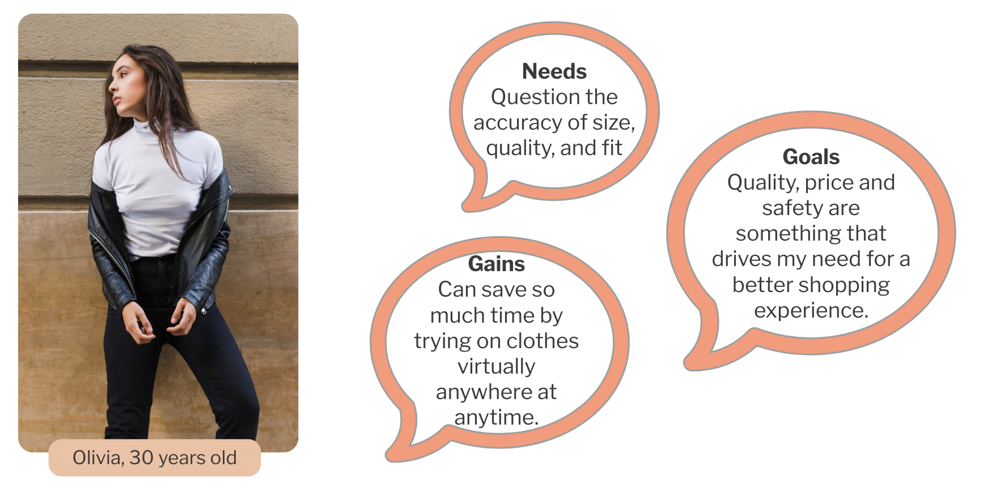
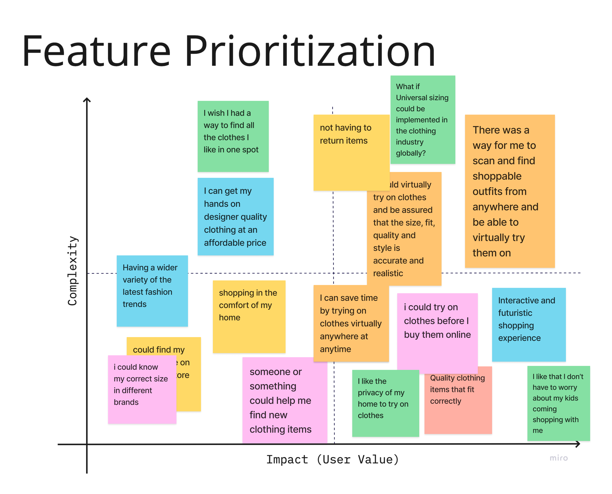

In this research project, we planned and conducted 5 user interviews to discover a user’s confidence and frustrations when shopping online compared to in-store shopping.
Online shoppers are open to virtual shopping and are looking for an efficient way to find an array of quality items at affordable prices in safer environments.
Online shoppers are conflicted when making purchases and need an efficient way to find quality clothing in the comfort and privacy of their homes.
The ability to try on clothes virtually at any time in the comfort of the user’s home and being able to see how various styles of clothing would fit their body type were high on the list.
Virtual closet feature which would allow users to virtually try on different outfits.
Test the onboarding flow to see if users can sign up and successfully create their closet.